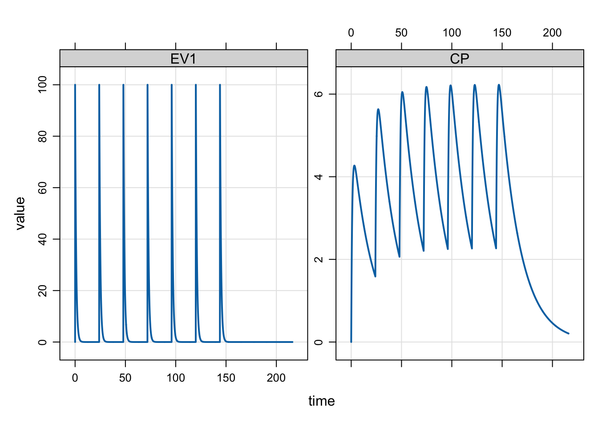
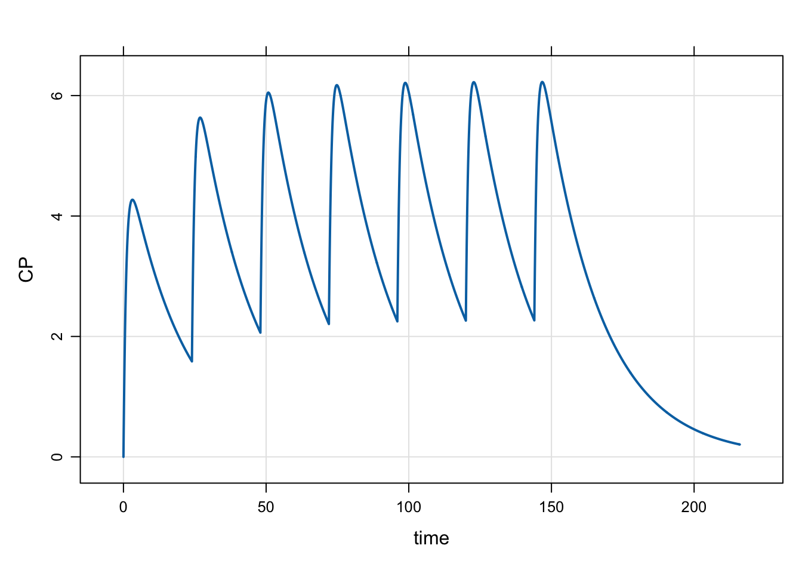
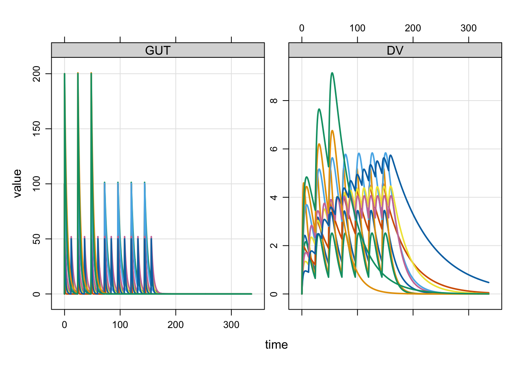

library(mrgsolve)
library(dplyr)
options(mrgsolve.soloc="build")1 Introduction
Event objects are simple ways to implement PK dosing events into your model simulation.
2 Setup
Let’s illustrate event objects with a one-compartment, PK model. We read this model from the mrgsolve internal model library.
mod <- mread_cache("pk1cmt", modlib(), end=216, delta=0.1)3 Events
Events are constructed with the ev function
e <- ev(amt=100, ii=24, addl=6)This will implement 100 unit doses every 24 hours for a total of 7 doses.
e has class ev, but really it is just a data frame
eEvents:
time amt ii addl cmt evid
1 0 100 24 6 1 1as.data.frame(e) time amt ii addl cmt evid
1 0 100 24 6 1 1We can implement this series of doses by passing e in as the events argument to mrgsim
mod %>% mrgsim(events=e) %>% plot(EV1+CP~time)
The events can also be implemented with the ev constructor along the simulation pipeline
mod %>%
ev(amt=100, ii=24, addl=6) %>%
mrgsim %>%
plot(CP~time)
4 Event expectations
amtis requiredevid=0is forbidden- Default
timeis 0 - Default
evidis 1 - Default
cmtis 1
Also by default, rate, ss and ii are 0.
5 Combine events
mrgsolve has operators defined that allow you to combine events. Let’s first define some event objects.
e1 <- ev(amt=500)
e2 <- ev(amt=250, ii=24, addl=4)
e3 <- ev(amt=500, ii=24, addl=0)
e4 <- ev(amt=250, ii=24, addl=4, time=24)We can combine e1 and e3 with a collection operator
c(e1,e4)Events:
time amt cmt evid ii addl
1 0 500 1 1 0 0
2 24 250 1 1 24 4mrgsolve also defines a %then$ operator that lets you execute one event and %then% a second event
e3 %then% e2Events:
time amt ii addl cmt evid
1 0 500 24 0 1 1
2 24 250 24 4 1 1Notice that e3 has both ii and addl defined. This is required for mrgsolve to know when to start e2.
6 Combine event objects to create a data set
We can take several event objects and combine them into a single simulation data frame with the as_data_set function.
e1 <- ev(amt=100, ii=24, addl=6, ID=1:5)
e2 <- ev(amt=50, ii=12, addl=13, ID=1:3)
e3 <- ev(amt=200, ii=24, addl=2, ID=1:2)When combined into a data set, we get * N=5 IDs receiving 100 mg Q24h x7 * N=3 IDs receiving 50 mg Q12h x 14 * N=2 IDs receiving 200 mg Q48h x 3
data <- as_data_set(e1,e2,e3)
data ID time amt ii addl cmt evid
1 1 0 100 24 6 1 1
2 2 0 100 24 6 1 1
3 3 0 100 24 6 1 1
4 4 0 100 24 6 1 1
5 5 0 100 24 6 1 1
6 6 0 50 12 13 1 1
7 7 0 50 12 13 1 1
8 8 0 50 12 13 1 1
9 9 0 200 24 2 1 1
10 10 0 200 24 2 1 1To simulate from this data set, we use the data_set function. First, let’s load a population PK model
mod <- mread_cache("popex", modlib())mod %>% data_set(data) %>% mrgsim(end=336) %>% plot(GUT+DV ~ .)